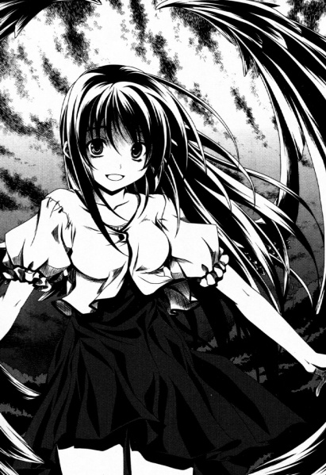

Iste boje kao kosa te osobe-.
To sam mislio dok sam posmatrao svoju ruku prekrivenu krvlju.
Crvena- Grimizno crvena kosa koja je još sjanija od
jagodastoplave.
Da, ta duga i prelepa grimizna kosa te osobe ima istu
boju kao boja kojom je prekrivena moja ruka.
Hyodou Issei — to je moje ime. Moji roditelji i momci iz škole me zovu „Ise”.
Ja sam učenik druge godine srednje škole koji trenutno proživljava mladost.
Bilo je jednom prilikom kada je učenik, koga nikada pre nisam sreo, rekao: „Zar to nije Ise?“, tako da stvarno ne znam koliko je moje ime poznato drugima.
Neočekivano sam popularan, kažete?
Ne, nije to slučaj. Uostalom, toliko sam poznat po tome što sam stvarno pohotan da su me čak optužili da sam virio u svlačionicu Ženskog kendo kluba.
Ne bih uradio tako besramnu stvar kao što je da virim u devojačku svlačionicu...
Žao mi je. Bio sam na mestu događaja. Bio sam u ostavi pored Kendo kluba. Pokušavao sam da virim kroz rupu na zidu u ostavi Kendo kluba.
Nažalost, nisam uspeo da bacim pogled. To je zato što Matsuda i Motohama nisu hteli da se sklone od rupe. Ozbiljno, ti likovi...
Nisam mogao da se smirim kada su ta dva idiota govorila stvari poput „Ohhh! Murayama ozbiljno ima velike sise!“ i „Ahhh, Katase sigurno ima lepe noge“.
Naravno da sam hteo da bacim pogled! Ali su se neki momci približavali ostavi, pa sam pobegao sa lica mesta.
Međutim, nešto zaista blaženo se desilo momku poput mene, koji bi svakodnevno radio svakakve perverzne stvari.
„Molim te, izađi sa mnom.“
Priznanje od devojke!
Osetio sam kako je to biti mlad.
Za momka poput mene koji nije imao devojku, to je bilo kao ostvarenje sna.
Ime moje devojke je Amano Yuma-čan. Ona je devojka sa svilenkasto crnom kosom i vitkim telom.
Ona je toliko slatka da sam se zaljubio u nju na prvi pogled.
Zar ne biste odmah rekli „OK“ da vam priđe neka lepotica i kaže „Hjudo-kun! Volim te! Molim te, izađi sa mnom!“?
To bi bilo kao nešto iz sna za momka poput mene čije godine se poklapaju sa brojem godina koliko nisam imao devojku.
Ne bi bilo čudno da neko kaže „Iz koje bišōdžo igre si to izvukao?“, ali se ozbiljno dogodilo!
Čudo se zaista dogodilo! Priznali su mi ljubav! Lepa devojka!
Zapravo sam mislio da je šala. Čak sam nekoliko puta pomislio da je to rezultat kaznene igre i da nas njene drugarice posmatraju negde izdaleka.
To se ne može izbeći. Do tada sam verovao da sam momak rođen da bude nepopularan kod devojaka.
Ali od tog dana, postao sam momak sa devojkom.
Svet oko mene se promenio. Ne znam kako da to objasnim, ali moje srce je bilo mirno. Hteo sam da kažem „Moja pobeda!“ svakom momku pored koga sam prošao.
Počeo sam da žalim svoja dva ortaka, Matsudu i Motohamu, koji nisu imali devojku. Toliko sam samopouzdan postao.
Na našem prvom sastanku nakon što smo počeli da se zabavljamo—
Bio sam spreman da iskoristim plan koji sam ranije smislio.
Fufufu, oprao sam zube desetine puta od sinoć. Nema mesta koje sam propustio.
Čak sam kupio i nove pantalone. Ipak, nikad se ne zna šta će se desiti.
Dolazim na mesto sastanka sa stavom super nevinog momka.
Stižem na mesto sastanka tri sata pre Juma-čan. Izbrojao sam do sto devojaka sa naočarima koje su prošle ispred mene!
Za to vreme sam dobio sumnjiv letak od čudne osobe koja je delila letke.
Bila je to okultna stvar sa čudnim magičnim krugom i rečenicom - "Tvoj san će biti ispunjen!" - napisanom.
......Želim da ga bacim, ali odlučujem da ga stavim u džep pošto ne mogu sada da ga bacim.
Kada je Juma-čan stigla, rekao sam ovo.
"Ne brini, i ja sam tek stigao."
Pogodak! Uspeo sam da to kažem. Oduvek sam želeo to da kažem!
Onda smo šetali držeći se za ruke. Bio sam zaista dirnut. Da imam sastanak držeći se za ruke sa mojom prelepom devojkom!
Bio sam toliko dirnut da sam umalo zaplakao.
Ne treba da žurim. Još nije vreme za paniku.
Nakon toga smo uživali u našem sastanku idući u prodavnicu odeće i razgledajući dekoracije za naše sobe.
Za ručak smo jeli u porodičnom restoranu baš kao što bi to uradio normalan srednjoškolac, a Juma-čan je ukusno jela svoj čokoladni parfe. Moj stomak se napunio samo gledajući je.
Da, osećao sam se kao da razumem kako se ostali tinejdžeri osećaju kada idu na sastanak. Osećao sam se kao da sam prvi put živ.
Mama, hvala ti što si me rodila. Tata, brinuo sam se da neću moći da nastavim našu porodičnu lozu, ali izgleda da više ne moraš da brineš o tome.
Dok sam razmišljao o svim tim stvarima, već je bilo popodne.
Vrhunac je!
Poljubac!? Poljubac pre povratka kući!? Moja glava se uzbudila samo razmišljajući o tome!
Oh, možda ćemo ići i dalje!
To razmišlja napaljeni muški srednjoškolac poput mene.
Nalazimo se u parku koji je udaljen od grada. Nema znakova ljudi, i niko nije ovde osim nas. Zahvaljujući tome, moje erotske maštarije se pojačavaju.
Trebalo je da pročitam knjigu koja uči kako da se rade još nestašnije stvari!
Juma-čan je već pustila moju ruku i stoji ispred fontane.
"Današnji dan je bio zaista zabavan."
Juma-čan se smeje dok joj je fontana iza leđa.
Kuu! Prokletstvo, kako je slatka. Zalazak sunca koji je iza nje daje dobru atmosferu.
"Hej, Ise-kun."
"Šta je, Juma-čan?"
"Postoji nešto što želim da uradim da proslavimo naš prvi sastanak. Možeš li da poslušaš moju želju?"
Oh da. To je to!
To je to! To mora da je to!
Miris mog daha! Proveren! Moja mentalna spremnost! Hmm! Moje srce kuca tako brzo~!
"Š-šta je ž-želja koju želiš?"
Aaaaagh. Ton mog glasa je dubok. Ona će saznati da razmišljam o nečemu idiotskom!
Napravio sam najgluplju grešku nakon što sam stigao ovako daleko......
Ali Juma-čan mi se samo smeje.
Onda mi to jasno kaže.
"Hoćeš li umreti za mene?"
............
......Eh? Šta je to bilo?
"......Eh? To je......huh, izvini, možeš li to da ponoviš? Mislim da mi nešto nije u redu sa ušima."
Sigurno sam pogrešno čuo.
To sam mislio. To mora da je to. Zato je ponovo pitam.
Ali......
"Hoćeš li umreti za mene?"
Ona mi to jasno ponovo kaže. Dok se smeje.
Njene reči nisu imale smisla. U trenutku kada sam hteo da kažem "To je tako smešno, Juma-čan" sa osmehom......
LEPET
Crna krila se pojavljuju sa njenih leđa.
Onda počinje da maše krilima. Crno perje lebdi u vazduhu i onda pada na moje noge.
Šta je to?
Eh? Sigurno je Juma-čan slatka kao anđeo, ali......
Anđeo? Ne, nema šanse da je to istina.
Da li je to neka vrsta glume?
Moja prelepa devojka koja maše krilima dok sunce zalazi iza nje.
Izgleda kao scena iz fantastične priče.

Ali ne mogu da poverujem u tako nešto.
Njene slatke oči se pretvaraju u hladne, zastrašujuće oči. „Bilo je zabavno. Kratko vreme koje sam provela sa tobom. Bilo je kao da se igram kuće sa malim detetom.”
Juma-čanin glas zvuči veoma hladno. Njen ton je kao odrasle osobe. Njena usta formiraju hladan osmeh.
ZUUUUU
Zvuk mnogo teži od buke koju pravi konzola za igrice vibrira u vazduhu.
Pravi mnogo zujanja i pojavljuje se u njenim rukama.
Izgleda kao koplje.
Da li sija? Izgleda kao da je to masa svetlosti ili nešto... Zapravo, to je koplje.
HJU
Zvuk vetra. Nakon njega sledi odvratna buka.
DUM!
U trenutku kada sam pomislio da mi je nešto okrznulo stomak, koplje koje je bilo u Juma-čaninoj ruci probija moj stomak.
Bacila je to na mene...
Ali pre svega, zašto? Pokušao sam da izvučem koplje iz sebe, ali ono nestaje.
Jedino što je ostalo je ogromna rupa u mom stomaku. I krv koja teče iz nje. Krv. Krv.
Zavrtelo mi se u glavi, a vid mi se zamaglio. Već sam ležao na zemlji i do trenutka kada sam to shvatio, noge su mi izgubile ravnotežu.
Koraci mi se približavaju dok sam na zemlji.
Tihi glas mi nejasno dopire. To je Juma-čan.
„Izvini. Bio si pretnja za nas, pa smo odlučili da te se rešimo rano. Ako želiš da gajiš zamerku, onda mrzi Boga koji ti je stavio Sveti Opremu u tebe.”
......Sveti, šta......?
Ne mogu ni da joj postavim pitanje, a u stanju sam da ležim na zemlji. Njeni koraci se udaljavaju od mene.
U isto vreme, počeo sam da gubim svest. Rupa u mom stomaku. Mora da je smrtonosna. Ne osećam bol.
Ali shvatio sam da sam u ozbiljno lošem stanju jer sam osećao da ću izgubiti svest.
Bilo bi lepo da sada izgubim svest kao da idem na spavanje. Ali ako se to desi, sigurno ću umreti.
Da li ste ozbiljni......? Da li ću umreti u ovim godinama?
Još nisam proživeo ni pola svog života!
Kako da se smejem ako umrem jer me je devojka izbola u ovom čudnom parku!
Ku... Moja svest počinje da bledi dok sam imao takve misli...
Čini se da mnoge stvari u meni nestaju......
Oh da, pitam se šta će se desiti sutra u školi?
Da li će Matsuda i Motohama biti šokirani? Da li će plakati za mnom?
Nema šanse, ne oni...
Mama, tata... Još nisam uradio ništa da im ugodim kao njihovo dete...
Pre... neće biti smešno ako pronađu one porno časopise koje sam tajno skrivao nakon svoje smrti...
......Zašto dođavola razmišljam samo o ovim stvarima kada ću umreti......?
Moje ruke... još uvek mogu da se pomeraju...
Dodirnuo sam stomak i doneo ga ispred sebe.
Crveno je... Grimizno crveno. Ovo je moja krv. Cela moja ruka je crvena. Ovo je sva moja krv.
Onda mi je ona pala na pamet.
Ona koju zamišljam je ta devojka.
Lepotica sa grimiznom kosom. Svaki put kad bih je video, oči su mi bile privučene njenoj grimiznoj kosi.
......Da sam umirao, voleo bih da je to u naručju lepe devojke poput nje......
Počeo sam da se osećam kao da varam svoju devojku Juma-čan jer imam ove misli. Čekaj, ta Juma-čan me je ubila...
......Ali da sam umirao, želeo bih da umrem nakon što sam opipao Juma-čanine oppai...
Haha, moje perverzne iluzije ne prestaju ni pre nego što umrem...
Aaah, oči su mi se još više zamaglile...
Da li je konačno kraj za mene......?
Prokletstvo, stvarno je bio dosadan život......
......Da se ponovo rodim, želim da budem......
„Dakle, ti si me pozvao.”
Odjednom se neko pojavljuje ispred mene i razgovara sa mnom.
Ne mogu da kažem ko je to jer su mi oči zamagljene.
„Izgleda da umireš. Tvoja rana... o moj, izgleda da ti se dešava nešto zanimljivo. Dakle, ti si to... Ovo je zaista zanimljivo.”
Ona se smeje kao da je pronašla nešto zanimljivo.
......Pitam se šta je toliko smešno......
„Ako umireš, onda ću ja to pokupiti. Tvoj život.
Od sada, živećeš za mene.”
Pre nego što sam izgubio svest, video sam sjajnu grimiznu kosu ispred sebe.